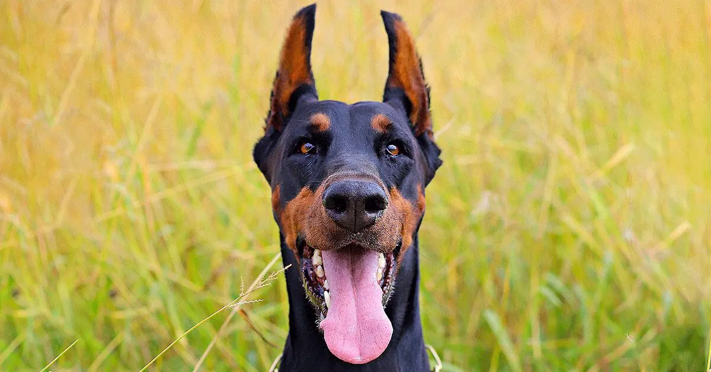

Sleek and powerful, possessing both a magnificent physique and keen intelligence, the Doberman Pinscher is one of dogkind's noblemen. This incomparably fearless and vigilant breed stands proudly among the world's finest protection dogs. Dobermans are compactly built dogs'¿muscular, fast, and powerful'¿standing between 24 to 28 inches at the shoulder. The body is sleek but substantial, and is covered with a glistening coat of black, blue, red, or fawn, with rust markings. These elegant qualities, combined with a noble wedge-shaped head and an easy, athletic way of moving, have earned Dobermans a reputation as royalty in the canine kingdom. A well-conditioned Doberman on patrol will deter all but the most foolish intruder.
Dobermans are known to be devoted companions loyal to their owners and willing to do anything to please them. While they make excellent watchdogs due to their protective nature, they can also be gentle if trained. They love getting plenty of exercises and playing games like fetch or tug-of-war, but they should also be socialized early to get comfortable around other pets.

© 2023 HTML World